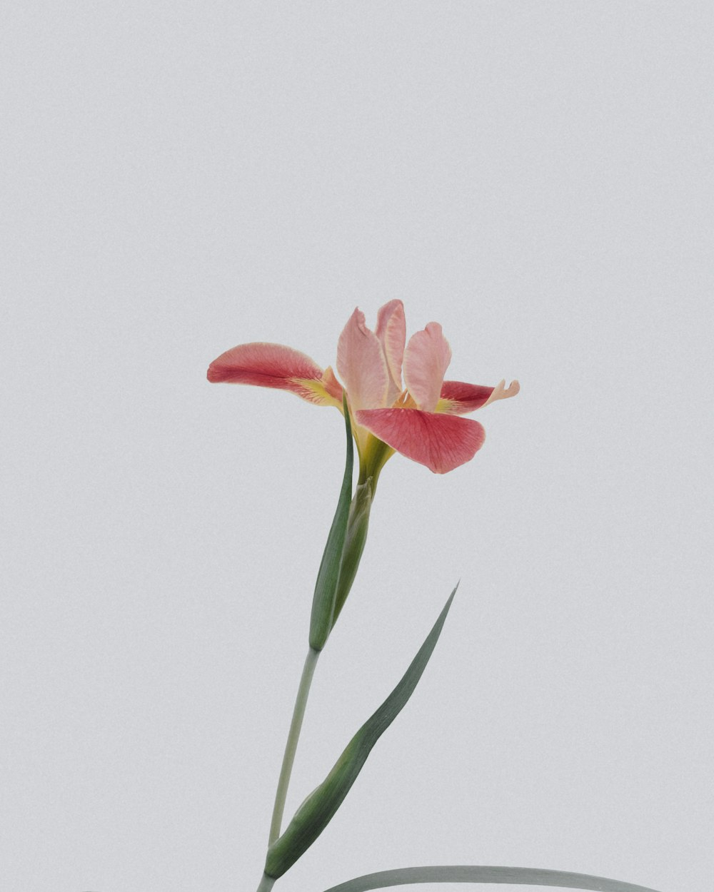
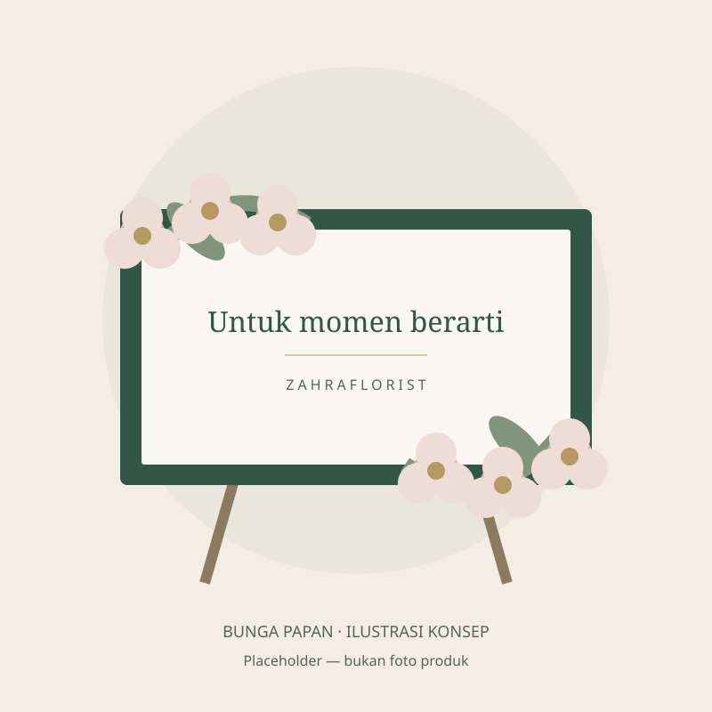
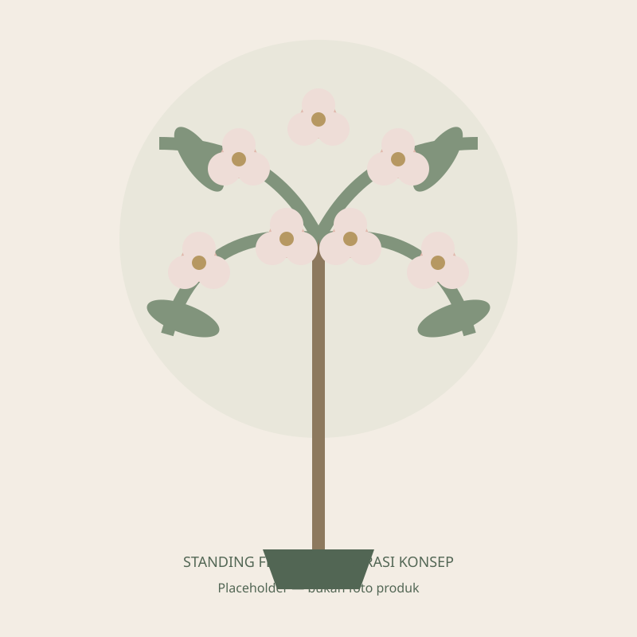
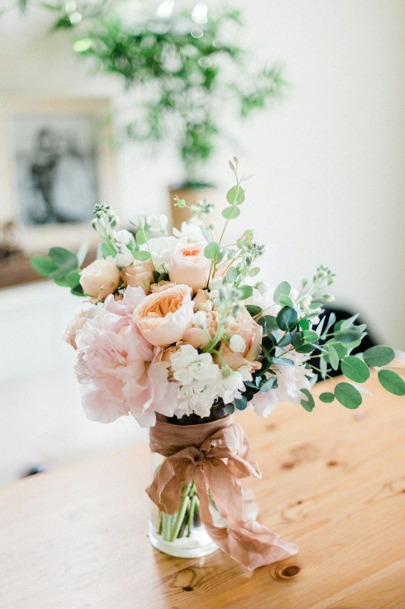

Zahraflorist · Rangkaian & perhatian
Rangkaian bunga untuk setiap momen berarti.
Ada banyak cara menyampaikan rasa. Temukan bunga papan, standing flower, dan hand buket untuk merayakan, menguatkan, atau sekadar memberi perhatian.

Prototype presentasi — foto, produk, harga, dan artikel masih berupa contoh.
Pilihan koleksi
Sebuah rangkaian, banyak makna.

Ilustrasi placeholder · bukan foto produk
Bunga Papan
Ucapan untuk hari bahagia, pencapaian baru, dan ungkapan belasungkawa.

Ilustrasi placeholder · bukan foto produk
Standing Flower
Rangkaian berdiri untuk menyambut, merayakan, dan menyampaikan perhatian.

Foto referensi · bukan produk toko
Hand Buket
Perhatian yang bisa digenggam, untuk seseorang yang ingin Anda bahagiakan.
Dari koleksi kami
Rangkaian pilihan
Mulai dari sini, lalu sesuaikan warna, ucapan, dan kebutuhan Anda bersama admin.
Tentang Zahraflorist
Karena perhatian layak dirangkai dengan baik.
Zahraflorist menghadirkan pilihan bunga papan, standing flower, dan hand buket untuk menemani berbagai momen. Dari ucapan selamat hingga ungkapan simpati, setiap kebutuhan memiliki ceritanya sendiri.
Jelajahi contoh koleksi kami dan bicarakan pilihan bunga, warna, serta pesan yang ingin Anda sampaikan. Ketersediaan dan detail akhir dikonfirmasi bersama admin.
Cara pesan
Dari pilihan menjadi perhatian.
Pilih rangkaian
Telusuri koleksi dan buka detail rangkaian yang sesuai dengan momen Anda.
Sampaikan kebutuhan
Siapkan tanggal, tujuan pengiriman, warna, dan ucapan yang ingin disampaikan.
Konfirmasi bersama admin
Pastikan ketersediaan, harga akhir, dan detail pengiriman sebelum memesan.
Catatan tentang bunga